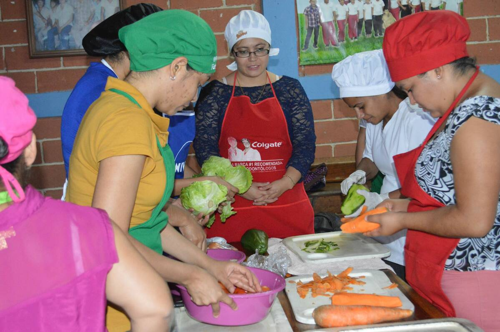

Sobre Nosotros
En Fritanga El Buen Sabor llevamos el corazón de Nicaragua a cada plato. Nuestro sueño comenzó como un pequeño local familiar y hoy somos un referente en comida típica con ese toque casero que enamora.
Nos enorgullece ofrecer recetas tradicionales transmitidas por generaciones. Cada ingrediente es seleccionado con esmero, y cada platillo se cocina con pasión y respeto por nuestras raíces.
Desde nuestros inicios en el barrio, nos hemos ganado el corazón de la comunidad por nuestra atención amable y platillos auténticos como el nacatamal, el baho y el chicharrón con yuca.
Gracias a nuestros clientes y al esfuerzo de nuestro equipo, seguimos creciendo sin perder nuestra esencia.
